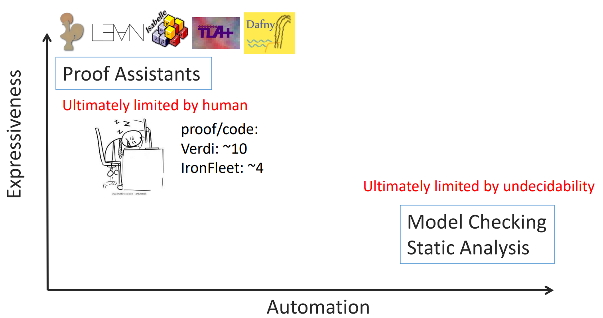

<div style="display: flex; justify-content: center; align-items: center; height: 700px;"> <div style="text-align: center; padding: 40px; background-color: white; border: 2px solid rgb(0, 63, 163); border-radius: 20px; box-shadow: 0 0 20px rgba(0,0,0,0.1);"> <h1 style="font-size: 48px; font-weight: bold; margin-bottom: 20px; color: #333;">Refinement Type for Oat</h1> <p style="font-size: 24px; color: #666;">A simple refinement type language</p> <p style="font-size: 16px; color: #999; margin-top: 20px;">Hengyu Ai | 2025-06-04 </p> </div> </div> <!--s--> <div class="middle center"> <div style="width: 100%"> # Part.1 What is Refinement Type? </div> </div <!--v--> ## Bugs that type system can catch - Incompatible types - Missing or extra arguments - Exhaustiveness checking <div class="fragment"> However, there are still many bugs that type system cannot catch, such as: - Div by zero - Out of bound access - Mismatch demension (these bugs are became more common with the rise of machine learning) </div> <div class="fragment"> <b>A basic type system is not enough.</b> </div> <!--v--> ## Verification <p></p> <!--v--> ## Refinement Type A "smart" dependent type. - In dependent type, types can be "concrete" values. - In refinement type, types are enriched with predicates. $$ x : B \\{ p \\} $$ where $B$ is a type and $p$ is a predicate. Key points: quantifier free arithmetic logic, totally decidable. <!--v--> ## Parts similar to Dafny - Precondition and postcondition - Path sensitivity, e.g. when checking `if` statement, the type of the variable can be refined to the branch taken. - Able to do some automatic reasoning <br/> ## Parts different from Dafny - No quantifier - Not Floyd-Hoare logics <!--v--> ## Dafny vs Refinement Type The main algorithmic problem with classical Floyd-Hoare logic is that to do useful things, you need to use **universally quantified** logical formulas inside invariants, pre- and post-conditions: `forall x. P(x)` The solver doesn't know which particular term `x` to instantiate, so you may found adding `assert` in Dafny helpful while `assert` has no semantic meaning in your program. Types decompose quantified assertions into quantifier-free refinements. <!--v--> ## Accessing a list in Dafny ```dafny datatype List<a> = Nil | Cons(head: a, tail: List<a>) function elements<a>(xs: List<a>): set<a> { if xs == Nil then {} else {xs.head} + elements(xs.tail) } function method ith<a>(xs: List<a>, i: int, def: a): (res: a) ensures res in elements(xs) + {def} { match xs { case Cons(h, t) => if i == 0 then h else ith(t, i - 1, def) case Nil => def } } ``` <!--v--> ## Accessing a list in Refinement Type ```haskell data List a = Nil | Cons {head :: a, tail :: List a} ith :: List a -> Int -> a -> a ith xs i def = case xs of Nil -> def Cons h t -> if i == 0 then h else ith t (i - 1) def ``` The constraints are parametrized by the type of the list, so the refinement type can be inferred from the context. <!--v--> ## List size Dafny: ```dafny function size<a>(xs: List<a>): nat { match xs { case Nil => 0 case Cons(h, t) => 1 + size(t) } } ``` Liquid Haskell: ```haskell {-@ measure n @-} size :: List a -> Int size xs = case xs of Nil -> 0 Cons _ t -> 1 + size t ``` <!--v--> ## List size With a more type-centric view, we can think of the recursive function size as a way to decorate or refine the types of the data constructors. ```haskell data List a where Cons :: h:a -> t:List a -> {v:List a | size v == 1 + size t} Nil :: {v:List a | size v == 0} ``` <!--v--> ## Verifying size ```dafny method test(x: int) { var ls := Cons(0, Cons(x, Nil)); assert size(ls) == 2; } ``` ```haskell test x = let ls = Cons 0 (Cons x Nil) in assert (size ls == 2) () ``` To get Dafny to verifier to sign off on the `assert (size(pos) == 2)` we have to add a mysterious extra assertion that checks the size of the intermediate value `Cons (1, Nil)`. (Without it, verification fails.) The SMT solver doesn't know where to instantiate the size axom. Dafny's instantiation heuristics come up short. The user must manually add the assertion. <!--s--> <div class="middle center"> <div style="width: 100%"> # Part.2 Demo </div> </div> <!--v--> ## Demo in editor <!--s--> <div style="display: flex; justify-content: center; align-items: center; height: 700px; "> <div style="text-align: center; padding: 40px; background-color: white; border-radius: 20px; box-shadow: 0 0 20px rgba(0,0,0,0.1);"> <div style="display: inline-block; padding: 20px 40px; border-radius: 10 px; margin-bottom: 20px;"> <h1 style="font-size: 48px; font-weight: bold; margin: 0; color: rgb(16, 33, 89)">Thanks for Listening</h1> </div> <p style="font-size: 24px; color: #666; margin: 0;">Any questions?</p> </div> </div>